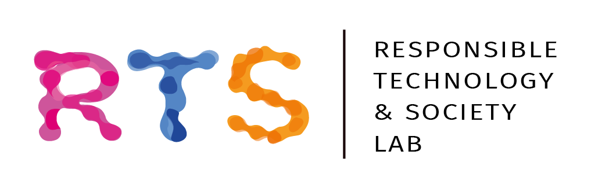
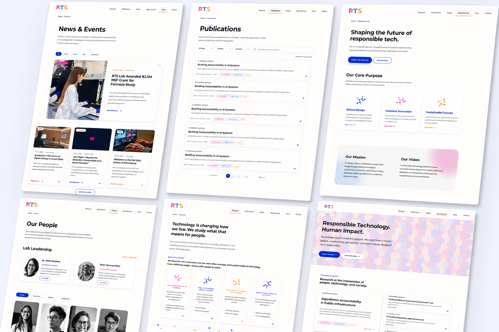

Important research lacked a cohesive visual identity and modern website, making the lab hard to discover and trust online.
RTS Lab
Team IGNIS built a cohesive brand and digital presence for RTS Lab, from identity systems to high-fidelity prototypes.
Team IGNIS delivered brand guidelines, UI systems, and high-fidelity prototypes so RTS Lab could present its work clearly.
RTS Lab
Brand Identity & UX/UI · Team IGNIS
Idil Kale · Khadija Osman · Jasvitha Madine · Alex Yusupov · Joshua Stubbs
Arizona State University · 2025–2026

The Challenge
Team IGNIS partnered with the Responsible Technology & Society Lab to give their research a presence that matched its importance. The lab studies how AI, automation, and digital systems shape society. That work was timely and rigorous, but without a cohesive visual identity or a modern website, it was hard to discover and harder to trust.
What RTS Lab Asked For
The client needed more than a logo refresh. They asked us to build a full brand and digital experience that could speak to researchers, students, industry partners, and policymakers without feeling cold, generic, or overly academic.
Strategy Over Safe Design
A bold, defensible creative direction, not another interchangeable research-lab look.
Human + Technology
Visual language that connects people and systems, making responsible tech feel approachable.
Inclusive, Global Reach
Symbolism and themes that reflect ethics, inclusion, and real-world societal impact.
A System That Scales
Logo, guidelines, UX research, and a high-fidelity website prototype for desktop and mobile.
How We Started
Before opening Illustrator, we audited five comparable research labs. Most felt either too cold or visually inconsistent; none combined warmth with structured, system-based thinking. That gap became our strategic north star.
"For researchers, students, and policy-facing partners, the RTS Lab makes complex technological systems more understandable, ethical, and socially relevant."
Finding Loop Layers
Each teammate brought three independent concepts to the table. After critique, we did not pick one winner. We merged three ideas into a single direction: Loop Layers, balancing human warmth, systemic energy, and analytical depth.

The Brand System
Custom letterforms echo the loop motif through overlapping forms. Fira Sans anchors the mark; Montserrat and Source Sans Pro carry the corporate system. The full brand guidelines are below.
Designing for Real Users
We mapped three core audiences (a PhD researcher, a faculty member in AI ethics, and an undergraduate CS student) and used their goals to shape every navigation and content decision on the site.


Persona 1 / 3
Structuring the Experience
Journey maps from discovery through research to contact revealed where users got lost, especially around publications and getting involved. That research became a six-section sitemap built around real needs, not internal org charts.
User Journey Maps


Journey 1 / 3
Web Architecture

What We Delivered
From strategy to screen, Team IGNIS handed off a complete system the lab could actually use, not just concepts on a slide deck.
Brand Identity
Logo system, color, typography, and brand guidelines across print and digital formats.
UX Research
Personas and journey maps grounded in how researchers, faculty, and students actually use the site.
Information Architecture
Sitemap and wireframes for six core sections, shaped by research findings.
Interactive Prototype
High-fidelity desktop and mobile flows in Figma, with the full brand applied.

What this project taught me
Working across brand and product in one timeline taught me to keep visual decisions tied to user journeys, not separate deliverables.
I would run another round of testing on the prototype flows with lab stakeholders and students.